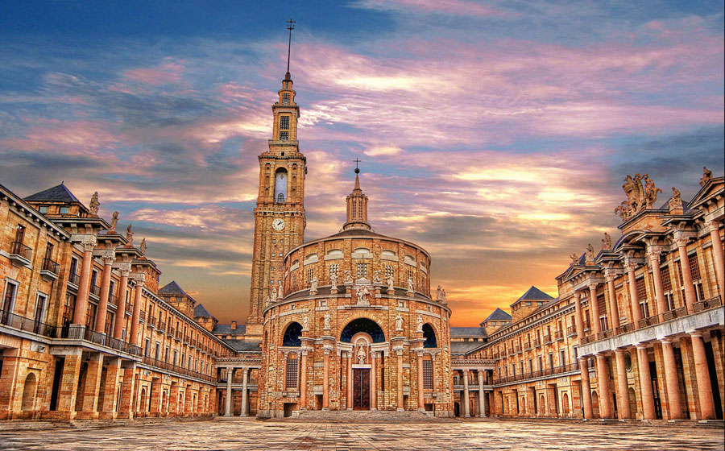

La Universidad Laboral de Gijón se encuentra situada en el municipio de Gijón (Asturias, España), concretamente en la parroquia de Cabueñes, a poco más de tres kilómetros del centro urbano.
La Universidad Laboral fue una institución educativa española orientada a hijos de trabajadores que estuvo en funcionamiento desde 1955 hasta 1989; en sus 21 sedes, estudiaron aproximadamente medio millón de alumnos.
Las universidades laborales dependían del Ministerio de Trabajo como entidades de provisión social a cargo de las Mutualidades Laborales. Su promotor fue José Antonio Girón de Velasco, por lo que nacieron a partir de fundamentos ideológicos falangistas, que se asentaron en su etapa de consolidación (1955-1962) y luego irían atenuándose progresivamente durante su etapa de expansión (1962-1978).2 Por último, durante la etapa de extinción (1979-1981) se reconvertirían en "Centros de Enseñanzas Integradas", y sus edificios y cometidos fueron absorbidos por el Ministerio de Educación y Ciencia.
Durante sus 26 años de existencia pasaron por sus instalaciones aproximadamente medio millón de alumnos, la mayoría de ellos en régimen de internado, aunque también había estudiantes en régimen de media pensión y externos. Estaban orientadas hacia los varones, salvo las de Cáceres y Zaragoza, que eran femeninas; sólo en los últimos años fueron mixtas. En ellas se impartía educación secundaria, formación profesional e ingenierías técnicas; en la de Cheste y Las Palmas también se impartía el segundo ciclo de educación primaria.
Sus edificios corrieron diferente destino: la mayoría se convirtieron en centros polivalentes (los actuales Institutos de Educación Secundaria y Centros Integrados Públicos de Formación Profesional); otros forman parte de los campus universitarios, y alguno es un complejo cultural.
Las universidades laborales constituyeron desde su inicio un sistema de cobertura educativa para las capas sociales menos favorecidas, con el objetivo de facilitar el derecho a la educación de la población trabajadora. Pervivieron, con todas sus servidumbres y grandezas, durante veintiséis años de la historia de España de la segunda mitad del siglo XX y han dejado, además de una indeleble huella arquitectónica en la geografía española, con la red de Centros de Universidades Laborales, un rastro cultural y profesional en el casi medio millón de alumnos que pasaron por sus aulas.